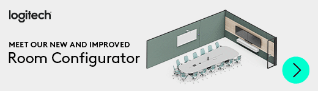

Biber Solutions
by Patrick Biber
Ihr Partner für passende IT-Lösungen
by Patrick Biber
Ihr Partner für passende IT-Lösungen
Als IT-Consultant mit langjähriger Erfahrung in der Betreuung grosser Unternehmen verstehe ich, dass auch kleine und mittlere Unternehmen (KMUs) Zugang zu hochqualitativer IT-Infrastruktur benötigen, um in der heutigen digitalen Welt erfolgreich zu sein. Aus diesem Grund biete ich umfassende IT-Dienstleistungen an, die speziell auf die Bedürfnisse von KMUs zugeschnitten sind.
Unsere Dienstleistungen:
- Netzwerklösungen: Aufbau und Wartung stabiler und sicherer Netzwerke, die Ihre täglichen Geschäftsprozesse unterstützen.
- NAS Storage: Effiziente Speicherlösungen, die Ihre Daten sicher und jederzeit zugänglich machen.
- Cloud-Dienstleistungen: Von Office 365 bis hin zu Kubernetes – ich helfe Ihnen, die Vorteile der Cloud für Ihr Unternehmen zu nutzen.
- Hosting und virtuelle Maschinen: Flexibles Hosting und VMs, die mit den Anforderungen Ihres Unternehmens mitwachsen.
- Linux-Support: Speziallösungen für Unternehmen, die auf die Stabilität und Flexibilität von Linux setzen.
- Videokonferenzlösungen: Ob Microsoft Teams, Google Meet oder andere Plattformen – ich sorge dafür, dass Ihre Kommunikation reibungslos funktioniert.
- Hochwertige IT-Ausstattung: IT-Lösungen, die normalerweise grossen Unternehmen vorbehalten sind, angepasst an Ihr Budget.
- Verwurzelt in Stäfa: Als Unternehmen aus Stäfa sind wir tief im Gemeindeleben verwurzelt und setzen uns dafür ein, lokale Unternehmen mit erstklassiger IT-Infrastruktur zu unterstützen.
Warum mit uns arbeiten?
Ich schätze eine offene und direkte Kommunikation. Als Ihr Partner und Unterstützer stehe ich Ihnen zur Seite, ohne dabei Ihre Freiheit einzuschränken. Bei mir gibt es keinen Lock-in: Ich setze auf transparente Prozesse und möchte, dass Sie sich jederzeit frei und unabhängig entscheiden können. Durch die enge Zusammenarbeit mit führenden Anbietern von Cloud-Diensten, SaaS-Lösungen und IT-Ausrüstung kann ich Ihnen massgeschneiderte und kosteneffiziente IT-Lösungen anbieten. Meine Erfahrung als IT-Manager eines grossen Unternehmens ermöglicht es mir, Ihre spezifischen Anforderungen zu verstehen und Lösungen zu entwickeln, die Ihre Geschäftsprozesse optimal unterstützen.
Ihr Erfolg ist mein Ziel, und das erreichen wir gemeinsam durch Vertrauen, eine klare, offene Kommunikation und massgeschneiderte IT-Lösungen.
Das perfekte Setup für die Schaltzentrale Ihres Unternehmens
Jedes Unternehmen, jeder kreative Kopf, jede Werkstatt und jeder Handwerksbetrieb ist einzigartig – und genau so einzigartig sollte auch die IT-Infrastruktur sein, die diese unterstützt. Wir verstehen, dass Ihre Anforderungen individuell sind und bieten daher massgeschneiderte Lösungen, die genau auf Ihre Bedürfnisse abgestimmt sind.
Von der Auswahl der besten, qualitativ hochwertigsten Komponenten bis hin zur Implementierung von Lösungen, die auch den höchsten Ansprüchen gerecht werden – wir arbeiten nur mit Partnern zusammen, denen wir voll und ganz vertrauen. Für die Produkte, die wir Ihnen empfehlen, legen wir unsere Hand ins Feuer und übernehmen selbstverständlich alle Garantieansprüche. Mit unserer Unterstützung wird Ihre IT-Schaltzentrale nicht nur zuverlässig und effizient, sondern auch ein echtes Kraftpaket, das Ihnen hilft, Ihre kreativen und unternehmerischen Ziele zu erreichen.
Wir stehen ein für unsere Produkte
Ich bieten ihnen die beste Beratung und die Garantieleistungen, damit Sie keinen Stress und lange Freude am Gerät haben. Durch unsere Partner Netzwerk können wir Ihnen diese ausgewählten Produkte und vieles mehr anbieten. Gerne mache ich Ihnen eine Offerte.
Sicheres und profesionelles Email mit ProtonMail
Die Integration von ProtonMail bietet sowohl Privatpersonen als auch Unternehmen eine sichere und verschlüsselte E-Mail-Kommunikation, die höchsten Datenschutzstandards entspricht. ProtonMail, bekannt für seine End-to-End-Verschlüsselung, schützt Ihre sensiblen Informationen vor unbefugtem Zugriff und gewährleistet, dass Ihre Daten privat bleiben.
Für Unternehmen bietet ProtonMail nicht nur Sicherheit, sondern auch die Möglichkeit, die E-Mail-Infrastruktur effizient zu verwalten. Mit benutzerfreundlichen Tools und der Fähigkeit, auf mehreren Geräten synchron zu arbeiten, können Teams sicher kommunizieren, ohne die Benutzerfreundlichkeit zu beeinträchtigen. Zudem passt sich ProtonMail nahtlos in bestehende Arbeitsabläufe ein, was es zu einer idealen Lösung für Unternehmen jeder Größe macht.
Privatpersonen profitieren von der einfachen Bedienung und der Gewissheit, dass ihre E-Mails nicht für Werbezwecke analysiert werden. ProtonMail bietet ein hohes Maß an Privatsphäre, ohne Kompromisse bei der Funktionalität einzugehen.
Insgesamt stellt die Integration von ProtonMail eine hervorragende Wahl für alle dar, die Wert auf Sicherheit, Datenschutz und Effizienz in ihrer Kommunikation legen, sei es im persönlichen oder geschäftlichen Umfeld.
Wenn Sie ProtonMail über diesen Partner Link beziehen, beantworte ich gerne Ihre Fragen zur Installation und Nutzung.

UniFi WiFi-Lösungen
UniFi WiFi-Lösungen bieten eine hervorragende Kombination aus Leistung, Skalierbarkeit und Benutzerfreundlichkeit. Entwickelt von Ubiquiti, sind UniFi-Netzwerke bekannt für ihre nahtlose Integration und Verwaltung. Mit UniFi können Unternehmen jeder Größe ein robustes und zuverlässiges drahtloses Netzwerk einrichten, das sowohl den heutigen als auch den zukünftigen Anforderungen gerecht wird.
Ein besonderer Vorteil von UniFi ist die zentrale Verwaltungskonsole, die eine einfache Überwachung und Steuerung des gesamten Netzwerks ermöglicht. Dies macht es IT-Administratoren leicht, das Netzwerk zu verwalten, Probleme zu diagnostizieren und bei Bedarf Upgrades durchzuführen. Zudem sind die UniFi Access Points für ihre hohe Reichweite und Stabilität bekannt, selbst in anspruchsvollen Umgebungen.
Ob in Büros, großen Gebäuden oder komplexen Campus-Netzwerken – UniFi WiFi-Lösungen bieten die Flexibilität und Leistung, die moderne Netzwerke benötigen. Mit UniFi können Sie sicherstellen, dass Ihr drahtloses Netzwerk sowohl sicher als auch zukunftssicher ist.
Synology Storage Solutions
Synology bietet leistungsstarke und flexible Speicherlösungen für Unternehmen und kreative Profis. Mit hoher Zuverlässigkeit und umfangreichen Funktionen ermöglichen Synology NAS-Geräte die effiziente Verwaltung und Sicherung Ihrer Daten.
Check the Synology NAS Selector.
Eizo EV3450XC FlexScan
Conferencing - Kollaboration ohne Kompromisse
Mit einer leistungsstarken Kombination aus Webcam, Mikrofon und Lautsprechern wird der Monitor zum integrierten Kommunikations-Hub. So lassen sich Meetings bequem an den Schreibtisch verlegen und jede Distanz zum Team in Luft auflösen. Für ortsunabhängige Zusammenarbeit - ohne zusätzliche Hardware.
Brillante Farben mit präzisen Abstufungen und stabile Kontraste aus jedem Blickwinkel. Möglich gemacht durch unser Qualitätsrezept: jahrzehnte lange Erfahrung und die besten Materialien. Denn nichts ist selbstverständlich, auch ein perfektes Bild nicht.
Logitech spitzen Hardware
Logitech Meeting Solutions bieten innovative und zuverlässige Technologien für Videokonferenzen, die speziell darauf ausgelegt sind, den Anforderungen moderner Arbeitsumgebungen gerecht zu werden. Mit Logitech erhalten Sie hochwertige Audio- und Videoqualität, benutzerfreundliche Schnittstellen und nahtlose Integration in gängige Videokonferenzplattformen. Ob für kleine Teams oder grosse Unternehmensbesprechungen, Logitech Meeting Solutions ermöglichen effiziente und produktive Meetings, unabhängig davon, ob Ihre Teilnehmer vor Ort oder weltweit verteilt sind.
Epson EcoTank-Drucker
Epson EcoTank-Drucker sind wegen ihrer niedrigen Druckkosten, der umweltfreundlichen nachfüllbaren Tintentanks und der hohen Druckqualität besonders beliebt. Sie bieten eine einfache Handhabung und erfordern seltener Wartung, was sie ideal für Vieldrucker in Büros und Werkstätten macht. Diese Kombination aus Effizienz, Umweltfreundlichkeit und Zuverlässigkeit macht sie zu einer ausgezeichneten Wahl.
Panasonic Toughbooks
Panasonic Toughbooks sind bekannt für ihre aussergewöhnliche Robustheit und Langlebigkeit. Sie sind so konzipiert, dass sie extremen Bedingungen wie Stössen, Wasser, Staub und extremen Temperaturen standhalten. Diese Laptops sind ideal für den Einsatz in anspruchsvollen Umgebungen, wie bei Ausseneinsätzen, in Werkstätten oder bei Notfalldiensten. Darüber hinaus bieten sie eine lange Akkulaufzeit und zuverlässige Leistung, was sie zu einer bevorzugten Wahl für Profis macht, die in herausfordernden Umgebungen arbeiten.
More infos about Panasonic Toughbooks.
Power PDF statt Adobe Cloud
Power PDF ist eine leistungsstarke Softwarelösung zum Erstellen, Bearbeiten und Konvertieren von PDFs. Sie bietet eine intuitive Benutzeroberfläche und vielseitige Funktionen, die speziell auf die Bedürfnisse von Unternehmen und Fachleuten zugeschnitten sind. Power PDF ermöglicht es Ihnen, effizient und präzise mit PDFs zu arbeiten, egal ob im Büro, unterwegs oder im Homeoffice. Diese Lösung ist ideal für alle, die eine zuverlässige und flexible PDF-Software benötigen. Weitere Informationen finden Sie hier.
Kyocera Copycenter mit Service
Kyocera Copycenter bietet herausragende Druck- und Kopierlösungen, die für ihre Zuverlässigkeit und Langlebigkeit bekannt sind. Diese Geräte sind ideal für Büros und Unternehmen, die auf hohe Qualität und Effizienz angewiesen sind. Kyocera überzeugt durch niedrige Betriebskosten und umweltfreundliche Technologie, was sie zu einer bevorzugten Wahl für moderne Unternehmen macht.
Custom Workstation
Eine leistungsstarke, massgeschneiderte Workstation bietet zahlreiche Vorteile, insbesondere für Profis, die komplexe und ressourcenintensive Aufgaben bewältigen müssen. Im Vergleich zu Standard-Computern ermöglicht eine Custom Workstation die Auswahl von Hardware-Komponenten, die genau auf die spezifischen Anforderungen eines Benutzers zugeschnitten sind. Dies führt zu deutlich verbesserter Leistung und Effizienz, sei es bei der Verarbeitung grosser Datenmengen, beim Rendern hochauflösender Videos oder bei der Entwicklung anspruchsvoller Software.
Ein weiterer grosser Vorteil einer Custom Workstation ist die Möglichkeit zur Skalierbarkeit. Da die Workstation individuell zusammengestellt wird, kann sie problemlos aufgerüstet werden, um zukünftigen Anforderungen gerecht zu werden. Dies macht sie zu einer langfristigen Investition, die mit den wachsenden Bedürfnissen eines Unternehmens oder Projekts mithalten kann.
Zusätzlich bieten Custom Workstations häufig eine höhere Zuverlässigkeit und Stabilität, da sie mit hochwertigen Komponenten ausgestattet sind, die aufeinander abgestimmt sind. Dies reduziert Ausfallzeiten und steigert die Produktivität, da man sich auf die Leistung der Workstation verlassen kann.
Insgesamt ist eine leistungsstarke Custom Workstation eine unverzichtbare Ressource für alle, die maximale Performance, Zuverlässigkeit und Flexibilität in ihrer Arbeit benötigen.
Server im Office oder in der Cloud
Die Entscheidung zwischen einem Server im Office oder in der Cloud hängt stark von den spezifischen Anforderungen und Prioritäten eines Unternehmens ab. Ein Server im eigenen Büro bietet volle Kontrolle über die Daten und Systeme, was insbesondere für Unternehmen wichtig ist, die strenge Datenschutzanforderungen haben oder eine hohe Verfügbarkeit sicherstellen müssen. Diese Lösung bietet auch schnelle Zugriffszeiten und kann individuell an die Bedürfnisse des Unternehmens angepasst werden.
Andererseits bieten Cloud-Server erhebliche Vorteile in Bezug auf Flexibilität und Skalierbarkeit. Sie ermöglichen es Unternehmen, schnell auf sich ändernde Anforderungen zu reagieren, ohne in teure Hardware investieren zu müssen. Cloud-Server sind zudem standortunabhängig zugänglich, was besonders in Zeiten von Remote-Arbeit ein grosser Vorteil ist. Zudem übernimmt der Cloud-Anbieter die Wartung und Updates, was den internen IT-Aufwand reduziert.
Ob im Office oder in der Cloud – die Wahl der richtigen Serverlösung hängt von den spezifischen Anforderungen Ihres Unternehmens ab. Oftmals kann eine hybride Lösung, die die Vorteile beider Ansätze kombiniert, die beste Option sein, um sowohl Flexibilität als auch Kontrolle zu gewährleisten.
Microsoft 365 - Wir kümmern uns um alles
Microsoft 365 ist vielleicht nicht das aufregendste Thema, aber es ist unverzichtbar für den reibungslosen Betrieb moderner Unternehmen. Es bietet eine breite Palette an Tools für Kommunikation, Zusammenarbeit und Produktivität. Was Microsoft 365 wirklich ausmacht, ist seine Zuverlässigkeit und die Möglichkeit, Arbeitsprozesse zu standardisieren.
Das Beste daran? Sie müssen sich um nichts kümmern. Ich übernehme die komplette Einrichtung, Verwaltung und Optimierung Ihrer Microsoft 365 Umgebung, inklusive der oft vernachlässigten, aber wichtigen Backup-Frage. So können Sie sich voll und ganz auf Ihr Geschäft konzentrieren, während ich sicherstelle, dass Ihre Daten sicher sind und Ihre Software reibungslos läuft.
Langweilig? Vielleicht. Aber notwendig. Und ich sorge dafür, dass es für Sie einfach und sorgenfrei bleibt.
Cloud Lösungen
Entwicklung von Entwicklern mit nahtlosen, kosteneffizienten Infrastruktur-Lösungen, angetrieben von Einfachheit, offener Kommunikation und einem Netzwerk von erstklassigen Cloud-Ingenieuren.
Bei Biber Cloud verwirklichen wir Ihre Vision, indem wir erstklassige Infrastruktur-Services bereitstellen, die darauf ausgelegt sind, Ihre Anwendungen im Web zugänglich zu machen. Von robuster Serverinfrastruktur bis hin zu umfassenden CI/CD-Pipelines verfügen wir über das Fachwissen und das Netzwerk, um sicherzustellen, dass Ihre Anwendungen immer online und optimal performen.
Gegründet von einem erfahrenen Infrastruktur-Ingenieur mit nachweislicher Erfolgsbilanz in der Verwaltung von großangelegten Cloud-Lösungen, wird Biber Cloud von einem Team der talentiertesten Infrastruktur-Cloud-Ingenieure der Branche unterstützt. Unsere Mission ist einfach: jeden Entwickler mit der Infrastruktur auszustatten, die er braucht, um erfolgreich zu sein, unabhängig von der Größe oder Komplexität seiner Vision.
Ob Sie ein Startup sind, das seine erste Anwendung starten möchte, oder ein etabliertes Unternehmen, das seine bestehende Infrastruktur optimieren möchte, Biber Cloud ist Ihr vertrauenswürdiger Partner, um Ihre digitalen Träume zu verwirklichen.
Niedrige Kosten, Einfachheit und offene Kommunikation
Bei Biber Cloud glauben wir, dass Hosting erschwinglich und unkompliziert sein sollte, ohne Kompromisse bei Leistung oder Zuverlässigkeit einzugehen. Unsere Infrastruktur-Lösungen sind maßgeschneidert, um den genauen Bedürfnissen der Entwickler gerecht zu werden und eine nahtlose Integration in Ihre Projekte zu gewährleisten.
Mit einem Fokus auf Einfachheit und einem Netzwerk von erstklassigen Infrastruktur-Experten liefern wir Systeme, die mühelos funktionieren, sodass Sie sich auf das konzentrieren können, was am wichtigsten ist: Ihren Code. Wir legen Wert auf offene Kommunikation und stellen sicher, dass Sie immer eine klare und direkte Verbindung zur benötigten Unterstützung haben.
Schließen Sie sich uns bei Biber Cloud an, wo Einfachheit auf Exzellenz in der Infrastruktur trifft.
Über mich
Gestatten Sie mir, mich vorzustellen: Mein Name ist Patrick Biber.
Ich lebe mit meiner Frau und unseren drei Kindern in Uerikon, in der Schweiz am Zürichsee.
Als technologiebegeisterter Mensch fasziniert
mich die Zukunft und die Möglichkeiten, die neue Technologien
bieten, um die Welt positiv zu verändern. Durch meine Arbeit und
Reisen hatte ich das Privileg, verschiedene Länder und Kulturen
kennenzulernen. Ich arbeite seit 25 Jahren in der IT in verschiedenen Rollen bei ganz unterschiedlichen Firmen.
Die Firma Biber Network IT existiert seit 2008, mit der ich tolle und erfolgreiche Projekte realisieren konnte.
Ich schätze die Arbeit in einem engagierten Team mit einer
gemeinsamen Vision, kann aber ebenso gut eigenständig
Verantwortung übernehmen. Stressige Situationen meistere ich
mit Ruhe und versuche dabei stets, meinen Sinn für Humor zu
bewahren. Ich bin überzeugt, dass wir in einer Zeit voller
Möglichkeiten leben, in der uns aussergewöhnliche Werkzeuge zur
Verfügung stehen.
Sie finde mich auch auf Linkedin.
Ich freue mich jederzeit auf Ihren Kontakt!
Patrick Biber
Hermann Hiltbrunner-Weg 24
8713 Ürikon
Karte
📧 contact@biber.solutions
💬 Signal
 WhatsApp
Threema
WhatsApp
Threema📲 Kontakt speichern